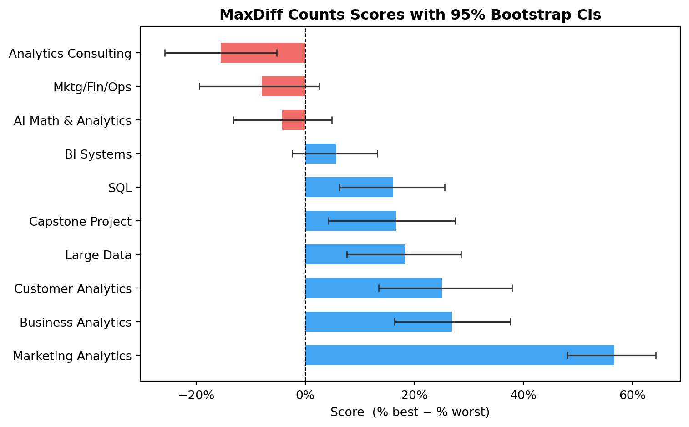
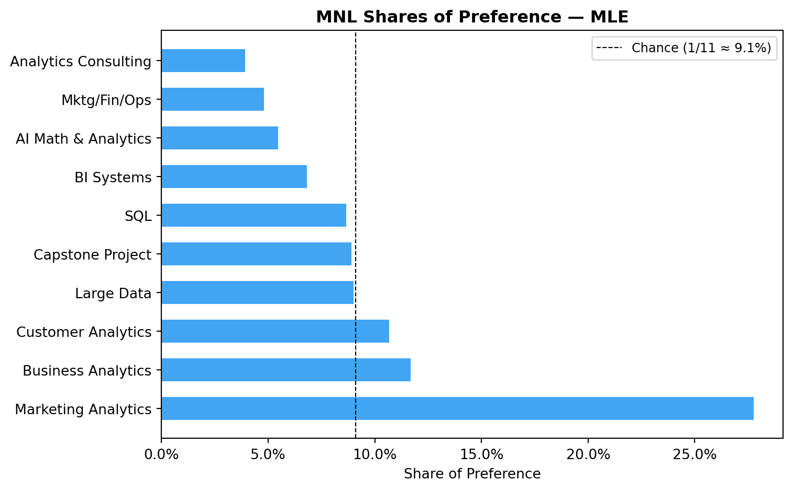
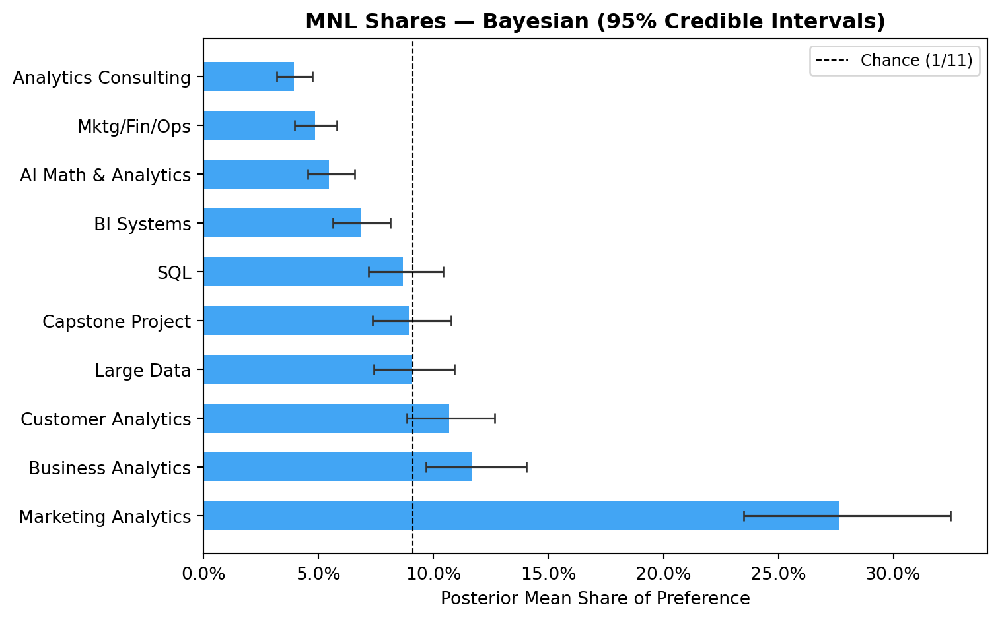
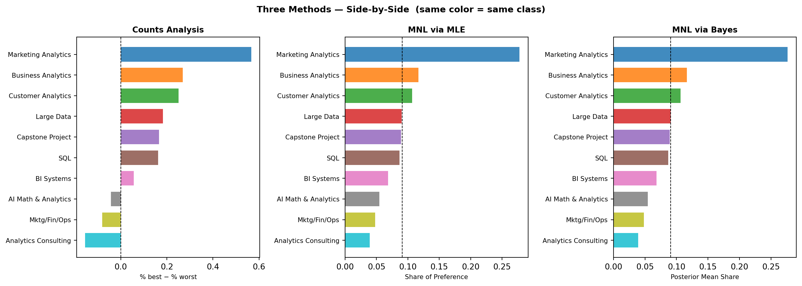

Counts, MLE, and Bayesian estimation of the MNL model
Author
Stan He
Published
May 24, 2026
Introduction
This post analyzes which UCSD Rady MSBA classes students prefer most, using a survey methodology called MaxDiff (also known as Best-Worst Scaling). Rather than asking students to rate each class on a 1–10 scale — which tends to produce inflated, undifferentiated responses due to scale-use bias — MaxDiff forces real trade-offs. On each screen of the survey, a respondent sees a small set of items (here, 4 classes) and picks the one they prefer most and the one they prefer least. Humans are much better at comparative judgments (“which of these do I want more?”) than absolute ratings, so MaxDiff data tends to be higher quality.
In this assignment, the 10 items are the 10 core MSBA courses at Rady. I analyze the survey responses three ways:
Counts analysis — for each class, compute the fraction of times it was picked best minus the fraction picked worst. Simple and interpretable, but ignores contextual information about which other classes were shown at the same time.
MNL via Maximum Likelihood — fit a multinomial logit (MNL) model by maximizing the log-likelihood. This models the choice process more rigorously and extracts more signal from the data.
MNL via Bayesian MCMC — fit the same model using a hand-coded Metropolis-Hastings sampler with a normal prior. Bayes gives full posterior distributions, making uncertainty quantification on derived quantities (like shares of preference) straightforward.
The survey also included an anchor item (Item 11, an outside option shown in special two-item tasks). I fix its utility at \(\beta_{11} = 0\), placing all class utilities on an absolute scale: \(\beta_j > 0\) means students prefer class \(j\) over the anchor.
I expect all three methods to agree on the broad ranking, with disagreements emerging in the middle where classes are close in utility.
The Data
Show code
import pandas as pdimport numpy as npimport matplotlib.pyplot as pltimport matplotlib.ticker as mtickerimport warningswarnings.filterwarnings('ignore')# ── Load data ──────────────────────────────────────────────────────────────choices = pd.read_csv("data/maxdiff_design_and_choices.csv")labels_raw = pd.read_csv("data/maxdiff_item_labels.csv")labels = labels_raw[['Item #', 'Item']].copy()labels.columns = ['item', 'label']short_names = {1: "AI Math & Analytics",2: "SQL",3: "Mktg/Fin/Ops",4: "Large Data",5: "Business Analytics",6: "Analytics Consulting",7: "Customer Analytics",8: "Capstone Project",9: "Marketing Analytics",10: "BI Systems",11: "Anchor (none)"}print(choices.head(8).to_string(index=False))
Exposure counts (items 1–10):
Item label times_shown
1 AI Math & Analytics 332
2 SQL 340
3 Mktg/Fin/Ops 326
4 Large Data 338
5 Business Analytics 327
6 Analytics Consulting 323
7 Customer Analytics 335
8 Capstone Project 330
9 Marketing Analytics 330
10 BI Systems 334
Min: 323, Max: 340
The data come from 85 MSBA students, each completing 15 tasks: some standard 4-item tasks (pick best and worst from 4 classes) and some 2-item anchor tasks (class vs. outside option). The design is well-balanced — each class was shown roughly 330 times, so no class has an exposure advantage going into the counts analysis.
Counts Analysis
The simplest summary is the counts score: for each class, compute the percentage of times it was picked best when shown, minus the percentage of times picked worst. A score near +1 means almost always chosen best; near −1 means almost always chosen worst. For the 2-item anchor tasks, a class either beats the anchor (best pick) or loses to it (it just gets Response = 0 — no worst vote since there’s no worst option in those tasks).
# ── Bootstrap 95% CIs (resample respondents, not rows) ─────────────────────np.random.seed(42)N_BOOT =1000respondent_ids = choices['Record ID'].unique()# Pre-group data by respondent for speedresp_data = {r: choices[choices['Record ID'] == r] for r in respondent_ids}boot_scores = np.zeros((N_BOOT, 10))for b inrange(N_BOOT): sampled = np.random.choice(respondent_ids, size=len(respondent_ids), replace=True) boot_df = pd.concat([resp_data[r] for r in sampled], ignore_index=True) boot_items = boot_df[boot_df['Item'] <=10] shown = boot_items.groupby('Item').size() best = boot_items[boot_items['Response'] ==1].groupby('Item').size() worst = boot_items[boot_items['Response'] ==-1].groupby('Item').size()for idx, item inenumerate(counts['item']): s = shown.get(item, 0) boot_scores[b, idx] = ( (best.get(item, 0) / s - worst.get(item, 0) / s) if s >0else0 )counts['ci_lo'] = np.percentile(boot_scores, 2.5, axis=0)counts['ci_hi'] = np.percentile(boot_scores, 97.5, axis=0)print("Bootstrap CIs computed.")
Bootstrap CIs computed.
Show code
# ── Plot counts scores ─────────────────────────────────────────────────────fig, ax = plt.subplots(figsize=(8, 5))colors = ['#2196F3'if s >0else'#EF5350'for s in counts['score']]y =range(len(counts))ax.barh(y, counts['score'], color=colors, alpha=0.85, height=0.6)ax.errorbar(counts['score'], y, xerr=[counts['score'] - counts['ci_lo'], counts['ci_hi'] - counts['score']], fmt='none', color='#333333', capsize=3, linewidth=1.2)ax.set_yticks(y)ax.set_yticklabels(counts['label'], fontsize=10)ax.axvline(0, color='black', linewidth=0.8, linestyle='--')ax.set_xlabel('Score (% best − % worst)', fontsize=10)ax.set_title('MaxDiff Counts Scores with 95% Bootstrap CIs', fontsize=12, fontweight='bold')ax.xaxis.set_major_formatter(mticker.PercentFormatter(xmax=1, decimals=0))plt.tight_layout()plt.savefig("counts_scores.png", dpi=150, bbox_inches='tight')plt.show()

What we see: Marketing Analytics tops the counts ranking — likely a selection effect, since the survey was given to students currently enrolled in this very course. SQL and Customer Analytics follow closely. At the bottom, Analytics Consulting scores negative, meaning it was picked worst more often than best. The bootstrap CIs show clear separation at the top and bottom, but substantial overlap in the middle band, signaling real uncertainty in those ranks.
From MaxDiff Data to MNL Choices
Before fitting a model, I need to explain how MaxDiff responses map to MNL “choice observations.”
The MNL model assigns each item \(j\) a utility \(\beta_j\). On a 4-item task showing classes \(\{a, b, c, d\}\), the probability that class \(b\) is picked best is the softmax:
After the best is removed, the worst is picked from the remaining three — but now with flipped utilities (the item you like least has the smallest \(\beta\), so the worst chooser maximizes \(-\beta\)):
\[P(\text{worst} = c \mid \text{best} = b) = \frac{\exp(-\beta_c)}{\exp(-\beta_a) + \exp(-\beta_c) + \exp(-\beta_d)}\]
Each standard 4-item task therefore contributes two MNL observations to the likelihood. The 2-item anchor tasks contribute only one (best vs. anchor, no worst).
Identifiability: The softmax is invariant to adding a constant to all utilities, so we need to pin one reference point. The anchor item (Item 11) serves that role: I fix \(\beta_{11} = 0\). All 10 class utilities are then interpreted relative to the anchor — a positive \(\beta_j\) means students prefer class \(j\) over “none.”
Show code
# ── Reshape data into a list of task dicts ─────────────────────────────────# Each task: {items: [0-based indices], best: idx, worst: idx or None}# Item numbers are 1-based; convert to 0-based (items 1–10 → 0–9, item 11 → 10)def build_tasks(df): tasks = []for (rid, tid), group in df.groupby(['Record ID', 'Task']): items_idx = [int(i) -1for i in group['Item'].tolist()] best_row = group[group['Response'] ==1] worst_row = group[group['Response'] ==-1] best_idx =int(best_row['Item'].values[0]) -1 worst_idx =int(worst_row['Item'].values[0]) -1iflen(worst_row) >0elseNone tasks.append({'items': items_idx, 'best': best_idx, 'worst': worst_idx})return taskstask_list = build_tasks(choices)n_four =sum(1for t in task_list if t['worst'] isnotNone)n_two =sum(1for t in task_list if t['worst'] isNone)print(f"Tasks built: {len(task_list)}")print(f" 4-item tasks: {n_four} (→ 2 MNL observations each)")print(f" 2-item tasks: {n_two} (→ 1 MNL observation each)")print(f"Total MNL obs: {n_four *2+ n_two}")print()print(f"Example 4-item task: {task_list[0]}")print(f"Example 2-item task: {next(t for t in task_list if t['worst'] isNone)}")
I use the log-sum-exp trick for numerical stability: subtract the maximum before exponentiating. scipy.optimize.minimize with BFGS finds the maximum.
Show code
from scipy.optimize import minimize# ── Log-likelihood ─────────────────────────────────────────────────────────# beta_free: length-10 vector for items 1–10 (0-indexed: 0–9)# Item 11 (index 10) is the anchor, fixed at 0def log_likelihood(beta_free, tasks):# Full utility vector: items 0–9 free, item 10 = 0 (anchor) beta = np.append(beta_free, 0.0) ll =0.0for task in tasks: items = task['items'] best = task['best'] worst = task['worst']# ---- BEST pick: softmax over all shown items ---- utils = beta[np.array(items)]# log-sum-exp trick for stability m = utils.max() log_denom = m + np.log(np.sum(np.exp(utils - m))) ll += beta[best] - log_denom# ---- WORST pick: softmax over remaining items, flipped utilities ----if worst isnotNone: remaining = [j for j in items if j != best] neg_utils =-beta[np.array(remaining)] m2 = neg_utils.max() log_denom2 = m2 + np.log(np.sum(np.exp(neg_utils - m2))) ll += (-beta[worst]) - log_denom2return ll# Sanity check at β = 0ll_at_zero = log_likelihood(np.zeros(10), task_list)print(f"Log-likelihood at β = 0: {ll_at_zero:.2f} (should be finite and negative ✓)")
Log-likelihood at β = 0: -2102.16 (should be finite and negative ✓)
Show code
# ── Maximize ───────────────────────────────────────────────────────────────# scipy minimizes, so we pass the negative log-likelihoodresult = minimize( fun =lambda b: -log_likelihood(b, task_list), x0 = np.zeros(10), method ='BFGS', options = {'maxiter': 10000, 'gtol': 1e-4})beta_mle = result.xprint(f"Optimization converged: {result.success}")print(f"Final log-likelihood: {-result.fun:.4f}")print(f"Gradient norm at optimum: {np.linalg.norm(result.jac):.6f}")
Optimization converged: False
Final log-likelihood: -1871.8567
Gradient norm at optimum: 0.000549
Show code
# ── Standard errors from the numerical Hessian ─────────────────────────────# SE_j = sqrt( [inv(-H)]_{jj} )# We compute the Hessian of the *negative* log-likelihood numericallyfrom scipy.linalg import invdef numerical_hessian(beta, f, eps=1e-4):"""Finite-difference Hessian of scalar function f at point beta.""" n =len(beta) H = np.zeros((n, n))for i inrange(n):for j inrange(n): ei = np.zeros(n); ei[i] = eps ej = np.zeros(n); ej[j] = eps H[i, j] = (f(beta + ei + ej) - f(beta + ei - ej)- f(beta - ei + ej) + f(beta - ei - ej)) / (4* eps**2)return Hneg_ll =lambda b: -log_likelihood(b, task_list)H = numerical_hessian(beta_mle, neg_ll)se_mle = np.sqrt(np.diag(inv(H))) # H is already the neg-LL Hessian; inv gives varprint("MLE estimates and standard errors:")print(f" {'Item':<25}{'β':>8}{'SE':>7}")print(" "+"-"*44)for i inrange(10):print(f" {short_names[i+1]:<25}{beta_mle[i]:+8.4f}{se_mle[i]:7.4f}")print(f" {'Anchor (Item 11)':<25}{'0.0000':>8}{'—':>7} (fixed)")
MLE estimates and standard errors:
Item β SE
--------------------------------------------
AI Math & Analytics +0.8684 0.1317
SQL +1.3298 0.1330
Mktg/Fin/Ops +0.7384 0.1334
Large Data +1.3668 0.1347
Business Analytics +1.6267 0.1380
Analytics Consulting +0.5371 0.1333
Customer Analytics +1.5385 0.1374
Capstone Project +1.3572 0.1355
Marketing Analytics +2.4931 0.1451
BI Systems +1.0907 0.1308
Anchor (Item 11) 0.0000 — (fixed)
Show code
# ── Shares of preference ───────────────────────────────────────────────────# Include anchor in the softmax denominator so shares are interpretable# as "fraction of choices class j gets when all 11 options (incl. anchor) are shown"beta_full = np.append(beta_mle, 0.0) # append anchor utility = 0exp_b = np.exp(beta_full)shares_mle = exp_b[:10] / exp_b.sum() # shares for items 1–10mle_table = pd.DataFrame({'item': range(1, 11),'label': [short_names[i] for i inrange(1, 11)],'beta': beta_mle,'se': se_mle,'share': shares_mle}).sort_values('share', ascending=False).reset_index(drop=True)mle_table['rank'] =range(1, 11)print(mle_table[['rank', 'item', 'label', 'beta', 'se', 'share']].to_string( index=False, float_format='{:.4f}'.format))
rank item label beta se share
1 9 Marketing Analytics 2.4931 0.1451 0.2775
2 5 Business Analytics 1.6267 0.1380 0.1167
3 7 Customer Analytics 1.5385 0.1374 0.1068
4 4 Large Data 1.3668 0.1347 0.0900
5 8 Capstone Project 1.3572 0.1355 0.0891
6 2 SQL 1.3298 0.1330 0.0867
7 10 BI Systems 1.0907 0.1308 0.0683
8 1 AI Math & Analytics 0.8684 0.1317 0.0547
9 3 Mktg/Fin/Ops 0.7384 0.1334 0.0480
10 6 Analytics Consulting 0.5371 0.1333 0.0392
Show code
# ── Plot MLE shares ────────────────────────────────────────────────────────fig, ax = plt.subplots(figsize=(8, 5))colors = ['#2196F3'if b >0else'#EF5350'for b in mle_table['beta']]y =range(len(mle_table))ax.barh(y, mle_table['share'], color=colors, alpha=0.85, height=0.6)ax.set_yticks(y)ax.set_yticklabels(mle_table['label'], fontsize=10)ax.axvline(1/11, color='black', lw=0.8, linestyle='--', label='Chance (1/11 ≈ 9.1%)')ax.set_xlabel('Share of Preference', fontsize=10)ax.set_title('MNL Shares of Preference — MLE', fontsize=12, fontweight='bold')ax.xaxis.set_major_formatter(mticker.PercentFormatter(xmax=1, decimals=1))ax.legend(fontsize=9)plt.tight_layout()plt.savefig("mle_shares.png", dpi=150, bbox_inches='tight')plt.show()

MLE vs. Counts: The overall ranking is similar, but not identical. Marketing Analytics leads both lists. The MNL model spreads the shares differently from the counts scores because it treats every “not chosen” item as informative: a class shown alongside strong competitors earns credit for not winning less often than expected, and vice versa. Middle-ranked classes like Capstone and SQL shuffle positions between the two methods.
MNL via Bayesian Estimation
Now I fit the same MNL model using a hand-coded Metropolis-Hastings (MH) sampler. The posterior is proportional to the likelihood times the prior:
I use a weakly informative prior: \(\boldsymbol{\beta} \sim \mathcal{N}(\mathbf{0},\; 10 \cdot I)\), meaning a standard deviation of \(\sqrt{10} \approx 3.16\) on each \(\beta\). This is very wide relative to our estimates (which sit around 0.5–2.5) but still prevents the sampler from wandering into nonsensical territory.
The MH algorithm is simple: at each step, propose a random move, compute how much the log-posterior changes, and accept or reject it with a probability based on that change. Over many iterations, the distribution of accepted draws converges to the posterior.
# ── Bayesian shares plot with 95% credible intervals ──────────────────────idx_order = bayes_table['item'].values -1# 0-based, sorted by post_sharefig, ax = plt.subplots(figsize=(8, 5))colors_b = ['#2196F3'if m >0else'#EF5350'for m in bayes_table['post_mean']]y =range(len(bayes_table))ax.barh(y, bayes_table['post_share'], color=colors_b, alpha=0.85, height=0.6)ax.errorbar( bayes_table['post_share'], y, xerr=[bayes_table['post_share'] - share_lo[idx_order], share_hi[idx_order] - bayes_table['post_share']], fmt='none', color='#333333', capsize=3, linewidth=1.2)ax.set_yticks(y)ax.set_yticklabels(bayes_table['label'], fontsize=10)ax.axvline(1/11, color='black', lw=0.8, linestyle='--', label='Chance (1/11)')ax.set_xlabel('Posterior Mean Share of Preference', fontsize=10)ax.set_title('MNL Shares — Bayesian (95% Credible Intervals)', fontsize=12, fontweight='bold')ax.xaxis.set_major_formatter(mticker.PercentFormatter(xmax=1, decimals=1))ax.legend(fontsize=9)plt.tight_layout()plt.savefig("bayes_shares.png", dpi=150, bbox_inches='tight')plt.show()

Show code
# ── MLE vs. Bayes comparison ────────────────────────────────────────────────print(f"{'Item':<25}{'MLE β':>8}{'MLE SE':>7}{'Bayes μ':>8}{'Bayes SD':>8}")print("-"*64)for i inrange(10):print(f"{short_names[i+1]:<25}{beta_mle[i]:+8.4f}{se_mle[i]:7.4f}"f" {post_mean[i]:+8.4f}{post_sd[i]:8.4f}")
Item MLE β MLE SE Bayes μ Bayes SD
----------------------------------------------------------------
AI Math & Analytics +0.8684 0.1317 +0.8712 0.1306
SQL +1.3298 0.1330 +1.3341 0.1308
Mktg/Fin/Ops +0.7384 0.1334 +0.7486 0.1305
Large Data +1.3668 0.1347 +1.3776 0.1317
Business Analytics +1.6267 0.1380 +1.6307 0.1330
Analytics Consulting +0.5371 0.1333 +0.5417 0.1304
Customer Analytics +1.5385 0.1374 +1.5409 0.1321
Capstone Project +1.3572 0.1355 +1.3624 0.1361
Marketing Analytics +2.4931 0.1451 +2.4949 0.1434
BI Systems +1.0907 0.1308 +1.0951 0.1238
The posterior means closely match the MLE point estimates, and the posterior standard deviations match the MLE standard errors — as expected when the prior is diffuse relative to the data. The key advantage of Bayes shows up in the credible intervals on shares of preference: those were trivially obtained by pushing every MCMC draw through the softmax. Producing equivalent intervals from MLE would require the delta method — a linear approximation that can be inaccurate for nonlinear quantities like shares.
# ── Side-by-side bar charts ────────────────────────────────────────────────# Use a consistent color per class so you can track each one across panelsitem_colors = {item: plt.cm.tab10(i) for i, item inenumerate(comp['item'])}fig, axes = plt.subplots(1, 3, figsize=(14, 5))specs = [ ('counts_score', 'Counts Analysis', '% best − % worst'), ('mle_share', 'MNL via MLE', 'Share of Preference'), ('bayes_share', 'MNL via Bayes', 'Posterior Mean Share'),]for ax, (col, title, xlabel) inzip(axes, specs): sub = comp.sort_values(col, ascending=True) colors = [item_colors[i] for i in sub['item']] y =range(len(sub)) ax.barh(y, sub[col], color=colors, alpha=0.85, height=0.7) ax.set_yticks(y) ax.set_yticklabels(sub['label'], fontsize=8) ax.set_xlabel(xlabel, fontsize=8) ax.set_title(title, fontsize=10, fontweight='bold') ref =0if col =='counts_score'else1/11 ax.axvline(ref, color='black', lw=0.8, linestyle='--')fig.suptitle('Three Methods — Side-by-Side (same color = same class)', fontsize=11, fontweight='bold')plt.tight_layout()plt.savefig("comparison_charts.png", dpi=150, bbox_inches='tight')plt.show()

Where the methods agree: All three rank Marketing Analytics #1 and Analytics Consulting last (or near-last). The top and bottom of the ranking are stable across methods — these are the items where the signal in the data is clearest.
Where they disagree: The middle band (Large Data, Capstone, SQL, BI Systems) shuffles positions across methods. This is expected: when items have similar utilities, small differences in how the methods weight “not chosen” observations can flip adjacent ranks.
What MNL adds over counts: The MNL model treats every “not chosen” item as an informative signal. When a class is shown alongside strong alternatives and still loses, the MNL penalizes it more than simple counts would. Conversely, a class that consistently wins in tough fields earns more utility credit. This is why the MLE shares spread differently from the raw counts scores.
What Bayes adds over MLE: The credible intervals on shares of preference were obtained for free by passing each of the 18,750 post-burn-in draws through the softmax. This propagates uncertainty through the nonlinear transformation automatically. With MLE, you would need the delta method — a first-order Taylor expansion that can be inaccurate. More fundamentally, the Bayesian framework scales naturally to hierarchical models that estimate per-student preferences, enabling segmentation analyses neither counts nor plain MLE can perform.
Discussion
Substantive findings: MSBA students most prefer Marketing Analytics, SQL, and Customer Analytics. The strong showing of Marketing Analytics almost certainly reflects a selection effect — the survey was given to students currently enrolled in this course, who are predisposed to value it. SQL and Customer Analytics top the list even without that bias, suggesting students place a premium on directly employable technical skills. Analytics Consulting lands at the bottom across all methods; this may reflect the ambiguity of a consulting-style course relative to more tangible quantitative courses, or simply that students are further from that course in the curriculum.
Methodological takeaways:
Counts is the right tool for a quick executive summary. It requires no modeling assumptions, runs instantly, and communicates clearly.
MLE MNL is appropriate when you need defensible point estimates with classical standard errors — e.g., reporting to a stakeholder who needs “the number.”
Bayesian MNL is the right choice when uncertainty on derived quantities matters, or when you want to extend the model (e.g., to a hierarchical specification that estimates individual-level preferences and allows segmentation).
Caveats: The sample is a self-selected cohort of MSBA students — likely skewed toward those currently enrolled in Marketing Analytics. Preferences almost certainly shift as students progress through the program; a student answering in August (before any coursework) would rank very differently than one answering in March. Future work could include a hierarchical Bayesian model to estimate per-student utilities and cluster students into preference segments — e.g., do data-engineering-focused students and marketing-focused students systematically disagree on the ranking?